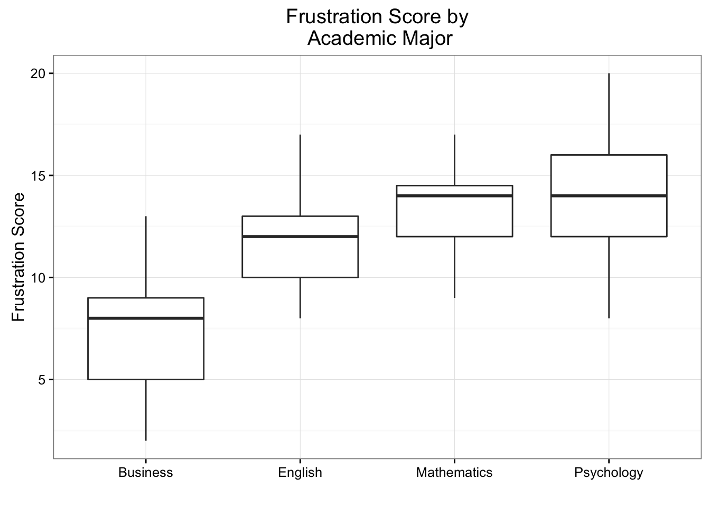

9.1 Bivariate Graphing
(C \(\rightarrow\) C) Prevalence of Nicotine Dependence (C) by Depression Status (C) (among current, daily, young adult smokers \(\rightarrow\) values stored in nesarc created in chapter 7)
library(ggplot2)
library(PDS)
ggplot(data = nesarc, aes(x = MajorDepression, fill = TobaccoDependence)) +
geom_bar(position = "fill") +
theme_bw() +
labs(x = "", y = "Fraction",
title = "Fraction of young adult daily smokers\nwith and without nicotine addiction\nby depression status") +
scale_fill_manual(values = c("green", "red"), name = "Tobacco Addiction Status") +
guides(fill = guide_legend(reverse = TRUE))
Mosaic Plots
library(vcd)
mosaic(~TobaccoDependence + MajorDepression ,data = nesarc, shade = TRUE)
(\(C \rightarrow Q\)) Boxplots and Violin plots
ggplot(data = frustration, aes(x = Major, y = Frustration.Score)) +
geom_boxplot() +
theme_bw() +
labs(x = "", y = "Frustration Score", title = "Frustration Score by\n Academic Major")
# Violin plots
ggplot(data = frustration, aes(x = Major, y = Frustration.Score)) +
geom_violin() +
theme_bw() +
labs(x = "", y = "Frustration Score", title = "Frustration Score by\n Academic Major")
(Q \(\rightarrow\) Q) Scatter plots
library(PASWR2)
ggplot(data = GRADES, aes(x = sat, y = gpa)) +
geom_point(color = "lightblue") +
theme_bw() +
labs(x = "SAT score", y = "First semester college Grade Point Average") +
geom_smooth(method = "lm")
(\(Q \rightarrow C\)) Scatter plot for logistic regression
library(ISLR)
library(ggplot2)
Default$defaultN <- ifelse(Default$default == "No", 0, 1)
Default$studentN <- ifelse(Default$student =="No", 0, 1)
ggplot(data = Default, aes(x = balance, y = defaultN)) +
geom_point(alpha = 0.5) +
theme_bw() +
stat_smooth(method = "glm", method.args = list(family = "binomial")) +
labs(y = "Probability of Default")